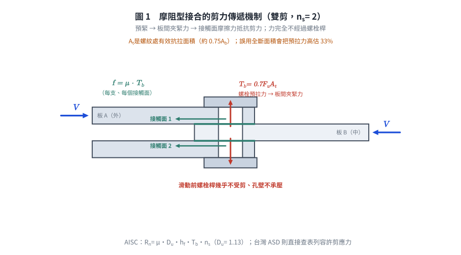
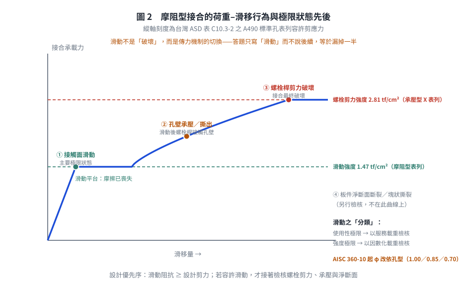
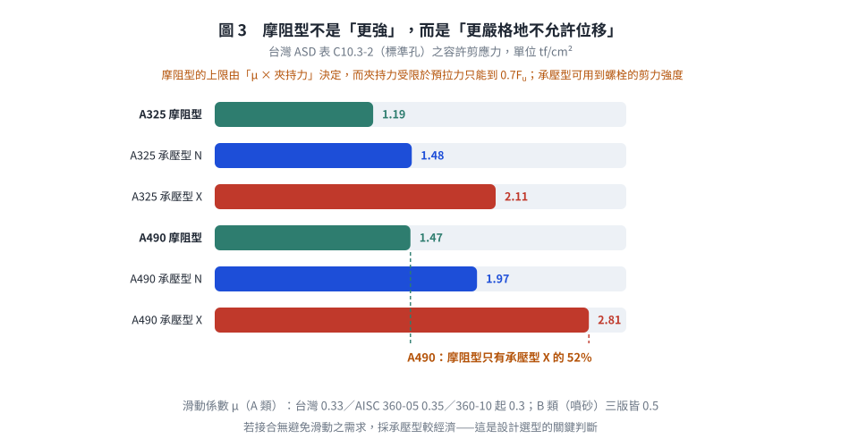

考題編號：SS-2017-2
主分類： SS-U1-4 接合之分析與設計
副分類： 無
設計法： LRFD
標籤： 高強度螺栓 摩阻型接合 Slip-critical 剪力傳遞機制 極限狀態 夾緊力 摩擦係數 滑動 預拉力0.7Fu 孔型係數 規範版本差異
1. 原始題目重述 (Problem Restatement)
請敘述高強度螺栓接合中摩阻型（Slip-critical）螺栓接合承受剪力時之傳遞機制及如何定義其極限狀態。（15 分）
2. 考題核心精神與出題者意圖 (Core Concepts & Examiner's Intent)
核心觀念：高強度螺栓靠「夾力 → 摩擦」而非「螺栓直接承壓」來傳遞剪力
此題測驗考生能否區分摩阻型（Slip-critical）與承壓型（Bearing-type）螺栓接合的根本差異，並正確定義滑動這個「極限狀態」的層面（使用性極限 or 強度極限？）。
出題者測驗重點：
- 高拉力預緊 → 夾緊力 → 摩擦力 的因果鏈
- 摩擦力的計算要素：夾緊力、摩擦係數（μ or ks）、接觸面數
- 極限狀態分類：滑動可能是 (a) 使用性極限狀態 或 (b) 強度極限狀態，依設計情境而定
- 摩阻型與承壓型的轉換關係
3. 解題戰略地圖與陷阱分析 (Strategic Roadmap & Trap Analysis)
步驟規劃：
1. 說明「高拉力預緊」是摩阻型接合的先決條件
2. 說明剪力傳遞機制：摩擦力（非螺栓孔承壓）
3. 定義滑動極限狀態（主要）+ 其他極限狀態（次要）
4. 說明 LRFD 下的摩阻型設計公式
關鍵陷阱：
⚠️ 陷阱1：誤以為摩阻型螺栓靠螺栓桿傳力
摩阻型設計的核心是接觸面摩擦力，不是螺栓桿的剪力或承壓。只要接合未滑動，螺栓桿實際上幾乎不受剪力（全靠夾緊力產生的摩擦）。⚠️ 陷阱2：極限狀態只說「滑動」而未說明分類
滑動在某些情況是使用性極限（服務載重下不能滑動，如：精密機械設備的接合，滑動後影響精度），在某些情況是強度極限（大地震或重要結構，滑動後立即破壞）。需要明確區分。⚠️ 陷阱3：忘記「接觸面數（nf）」的影響
一個螺栓可有單剪（nf = 1）或雙剪（nf = 2）接觸面，摩擦力與接觸面數成正比。
3.5 變數層次分析（Variable Hierarchy Analysis）
複習提示：解題後，在每個卡住的知識點「卡關?」欄標記
⚠；第二次複習時只看有⚠的項目。
最終目標： 說明摩阻型螺栓靠「預緊→夾緊力→摩擦力」傳遞剪力的機制，並定義滑動（Slip）為主要極限狀態及其使用性/強度極限的分類
主要公式（$\boxed{\phantom{x}}$ = 未知，待推導）
台灣 2010 規範（容許應力設計法）—— 表列容許剪應力，不用公式：
$$f_v \le F_v^{\text{摩阻型}} \quad\text{（A325 標準孔 } 1.19\text{ tf/cm}^2\text{；A490 標準孔 } 1.47\text{ tf/cm}^2\text{）}$$
AISC 360 系列（公式化）：
$$\boxed{R_n} = \mu \cdot D_u \cdot h_f \cdot T_b \cdot n_s \quad \text{（每支螺栓）}$$
$$\text{預拉力：} \; T_b = 0.70\,F_u^b\,A_t \quad\text{（規範表列，「等於最小抗拉強度之 0.7 倍」）}$$
⚠️ $\phi$ 之取法因規範版本而異，見 §4(二) 與 §6：AISC 360-05 依「使用性／強度極限」分 1.00／0.85；AISC 360-10 起改依孔型分 1.00／0.85／0.70。
L1：題目直接給定
| 符號 | 數值 | 說明 |
|---|---|---|
| 接合類型 | 摩阻型（Slip-critical） | 靠夾緊摩擦傳力，非螺栓桿直接承壓 |
| 設計法 | LRFD | 強度折減係數 $\phi$ 依極限狀態選取 |
L2：需知識點推導
Step 1：高拉力預緊機制
| 符號 | 公式 / 來源 | 卡關? |
|---|---|---|
| $T_b$（$T_o$） | 規定最小螺栓預拉力 = $0.70 F_u^b A_t$（規範表列，$A_t$ 為螺紋處有效抗拉面積） | |
| 夾緊力 | 螺桿拉伸 → 頭部/螺帽對鋼板形成正向壓力 $T_o$ | |
| 接觸面摩擦力 | $f = \mu \times T_o$（每支螺栓、每個接觸面） |
Step 2：剪力傳遞機制
| 符號 | 公式 / 來源 | 卡關? |
|---|---|---|
| $\mu$（$k_s$） | 滑動係數：台灣規範要求「潔淨銹皮與噴氣清除及表面塗以護膜者，其滑動係數應在 0.33 以上」；AISC 360-10 起 A 類 = 0.30、B 類（噴砂）= 0.50 | |
| $n_s$ | 接觸面數：單剪 = 1，雙剪 = 2 | |
| $D_u$ | 實際／規定最小預拉力之比（AISC 取 1.13） | |
| $h_{sc}$ / $h_f$ | AISC 360-05：孔型係數 $h_{sc}$（標準孔 1.0、超大孔 0.85、長槽孔 0.70）；AISC 360-10 起改為填隙板係數 $h_f$，孔型效應移入 $\phi$ | |
| 螺栓桿受力狀態 | 滑動前螺栓桿幾乎不受剪——全靠摩擦傳力 |
Step 3：極限狀態定義
| 符號 | 公式 / 來源 | 卡關? |
|---|---|---|
| 主要極限狀態 | 接觸面滑動（Slip at faying surface） | |
| 使用性極限 | 服務載重下不允許滑動（精密／疲勞接合）；AISC 360-05 之 $\phi = 1.00$ | |
| 強度極限 | 因數化載重下不允許滑動（安全等級高）；AISC 360-05 之 $\phi = 0.85$ | |
| ⚠️ 版本注意 | AISC 360-10 起 $\phi$ 改依孔型（標準孔／短槽孔垂直力向 1.00；超大孔／短槽孔平行力向 0.85；長槽孔 0.70），不再依使用性／強度區分 | |
| 次要極限狀態 | 螺栓桿剪力破壞、孔壁承壓、淨截面斷裂（滑動後轉承壓型） |
L3：深層知識（不懂就卡住）
| 知識點 | 說明 | 補強頁 | 卡關? |
|---|---|---|---|
| 摩阻型 vs 承壓型的根本差異 | 摩阻型靠摩擦（螺栓桿不受剪）；承壓型靠螺栓桿剪力+孔壁承壓 | ||
| 接觸面處理等級 | 滑動係數 $\mu$ 取決於表面處理；A/B 類差異大，設計師需在規格書中明定 | ||
| 滑動極限的雙重分類 | 使用性 vs 強度——這是概念上的分類（本題答題核心）；至於 $\phi$ 是否依此分類取值則因規範版本而異（360-05 是、360-10 起否） | ||
| 接觸面數 $n_s$ | 單剪（一個接觸面）vs 雙剪（兩個接觸面）；強度直接成比例 | ||
| 預拉力係數 0.70 | $T_b = 0.70F_u^bA_t$；此係數自 AISC LRFD 1993 至 360-22 未變（台灣規範原文：「等於最小抗拉強度之 0.7 倍」） | ||
| 滑動後行為 | 接合滑動後螺栓桿接觸孔壁，轉變為承壓型行為，繼續加載才會桿剪破壞 |
4. 步驟化詳細計算過程 (Step-by-Step Detailed Calculation)
(一) 摩阻型螺栓接合承受剪力時的傳遞機制
前提：高拉力預緊（High-Tension Preloading）
摩阻型接合的根本前提是螺栓在安裝時被施加高拉力（預緊力），在接合板間產生強大的夾緊力（Clamping Force）。
對於一支螺栓，其規定最小預拉力 $T_b$ 依規範表列（台灣規範表 10.3-1 之原文：「等於最小抗拉強度之 0.7 倍」）：
$$T_b = 0.70 \times F_u^b \times A_t$$
其中 $F_u^b$ 為螺栓最小抗拉強度、$A_t$ 為螺紋處有效抗拉面積（$\approx 0.75 A_b$）。
數值驗核（3/4 in A325，$F_u^b = 120$ ksi、$A_t = 0.334$ in²）：$0.70 \times 120 \times 0.334 = 28.1$ kips，與 AISC 表 J3.1 所列 28 kips 相符 ✓。若誤用全斷面積 $A_b = 0.442$ in² 則得 37.1 kips，高估 33%。
日系扭剪型螺栓（F10T／S10T）之標準張力另依 JIS／CNS 表列（例如 M20 之設計軸力約 160 kN、M22 約 200 kN），台灣工程實務兩套系統並存，須依設計圖說所指定之螺栓標準查表。
剪力傳遞機制：接觸面摩擦力
當接合承受水平剪力 $V$ 時：
─────────────────────────────────
板 1（上） | ← V 受剪力
─────────────────────────────────
↑ 夾緊力 T₀ ← 螺栓高拉力預緊，使兩板緊密壓合
─────────────────────────────────
板 2（下） |
─────────────────────────────────
接觸面存在摩擦力 f = μ × T₀
傳遞步驟：
- 螺栓預緊：安裝後，以扭力扳手、轉角法或直接張力指示器（DTI）等方式，將螺栓預緊至設計拉力 $T_o$。
- 夾緊力形成：螺桿拉伸 → 頭部和螺帽對鋼板形成夾緊壓力 $T_o$（正向力）。
- 摩擦力抵抗剪力：在接觸面（faying surface）上，摩擦力 $f = \mu \times T_o$ 抵抗外部剪力。
- $\mu$（或 $k_s$）= 滑動係數，取決於接觸面處理方式（未塗裝 / 噴砂 / 熱浸鍍鋅等） - 不滑動狀態：在外力未超過摩擦力總量之前，接合板不產生相對滑動，螺栓桿本身幾乎不承受剪力或承壓力。

圖 1 剪力的傳遞路徑：預緊 → 夾緊力 → 接觸面摩擦，力完全不經過螺栓桿。這張圖攔的是「摩阻型靠螺栓桿傳剪」這個最根本的誤解，也標出 $T_b$ 要乘的是螺紋處有效抗拉面積 $A_t$。
設計滑動強度 —— 兩套規範寫法
(a) 台灣 2010 規範（容許應力設計法第十章）：表列容許剪應力
台灣 ASD 規範不用乘積公式，而是直接表列摩阻型接合之螺栓容許剪應力（表 10.3-2／C10.3-2）：
| 螺栓 | 標準孔 | 超大孔／短槽孔 | 長槽孔 |
|---|---|---|---|
| A325 | 1.19 tf/cm²（17 ksi） | 1.05 | 0.84 |
| A490 | 1.47 tf/cm²（21 ksi） | 1.26 | 1.05 |
並於 §10.3.7 規定接觸面處理：「潔淨銹皮與噴氣清除及表面塗以護膜者，其滑動係數應在 0.33 以上」。
（對照：同表之承壓型 A490 螺紋不在剪力面者為 40 ksi = 2.81 tf/cm²——摩阻型僅為承壓型的 52%，這是摩阻型設計「較保守」的量化證據。）
(b) AISC 360 系列：乘積公式
$$R_n = \mu \cdot D_u \cdot h_f \cdot T_b \cdot n_s$$
其中：
- $\mu$（或 $k_s$）= 平均滑動係數：AISC 360-10 起 A 類（未塗裝軋製鋼）= 0.30、B 類（噴砂）= 0.50（360-05 之 A 類為 0.35；AISC LRFD 1993 與台灣規範為 0.33）
- $D_u = 1.13$ = 實際安裝預拉力與規定最小值之比
- $h_f$ = 填隙板（filler）係數（360-10 起取代 360-05 之孔型係數 $h_{sc}$）
- $T_b = 0.70F_u^bA_t$ = 規定最小預拉力
- $n_s$ = 接觸面（faying surface）數：單剪 = 1，雙剪 = 2
$$\phi R_n:\quad \begin{cases} \text{AISC 360-05：} & \phi = 1.00\ (\text{使用性極限}),\quad \phi = 0.85\ (\text{強度極限}) \[2pt] \text{AISC 360-10／-16／-22：} & \phi = 1.00\ (\text{標準孔、短槽孔垂直力向}) \ & \phi = 0.85\ (\text{超大孔、短槽孔平行力向}) \ & \phi = 0.70\ (\text{長槽孔}) \end{cases}$$
⚠️ 這是本題最容易答錯的細節：「$\phi = 1.0$ 用於使用性、$\phi = 0.85$ 用於強度」是 AISC 360-05（及台灣規範所本之 LRFD 1999 附錄）的規定；AISC 360-10 起 $\phi$ 改依孔型取值，孔型效應由 $h_{sc}$ 移入 $\phi$，而「使用性／強度」之區分則純粹決定檢核時所用的載重組合（使用載重 vs 因數化載重），不再影響 $\phi$。
傳力機制示意（雙剪接合）：
板A ──→ V ──→ 接觸面1（摩擦）──→ 板B ──→ 接觸面2（摩擦）──→ 板A
nf = 2 → 總摩擦力 = 2 × μ × T₀（每支螺栓）
(二) 極限狀態定義
摩阻型螺栓接合的主要極限狀態是接合滑動（Slip），但依設計情境有不同分類：
極限狀態 1：滑動（Slip）—— 主要極限狀態
定義： 當外部剪力超過接觸面摩擦阻力時，接合板產生相對位移（滑動），摩擦傳力失效。此為摩阻型接合的設計控制極限狀態。
| 滑動的設計分類 | 檢核載重 | 適用情境 | AISC 360-05 之 $\phi$ |
|---|---|---|---|
| 使用性極限狀態（Serviceability） | 服務載重（未因數化） | 精密接合、疲勞接合、需避免板件相對位移影響幾何精度者；滑動後結構仍安全 | 1.00 |
| 強度極限狀態（Strength） | 因數化設計載重 | 接合一旦滑動即危及結構安全（如超大孔或長槽孔使滑動量過大、或滑動後承壓型強度不足者） | 0.85 |
📌 AISC 360-10 起之改變：「使用性／強度」之區分仍然存在，但只決定用哪一組載重去檢核；$\phi$ 改依孔型取值（1.00／0.85／0.70）。台灣 2010 規範（ASD）則以表列容許剪應力涵蓋孔型效應（標準孔／超大孔／長槽孔三欄），概念一致。

圖 2 滑動不是「破壞」，而是傳力機制的切換；滑動後接合轉為承壓型行為，還要再檢核螺栓剪力、孔壁承壓與淨斷面。這張圖攔的是極限狀態只答「滑動」而說不出後續與分類。
極限狀態 2：螺栓桿破壞（Bolt Shear Failure）
一旦接合滑動後（摩擦喪失），螺栓桿直接接觸孔壁，接合轉變為「承壓型行為」。繼續加載會導致螺栓桿剪力破壞：
$$R_n = F_{nv} \cdot A_b$$
其中 $F_{nv}$ = 螺栓剪力強度，$A_b$ = 螺栓截面積。
極限狀態 3：承壓破壞（Bearing Failure）
螺栓孔壁承壓應力超過鋼板極限強度，孔壁擠壓擴孔：
$$R_n = 1.2 L_c t F_u \le 2.4 F_u d t \quad\text{（AISC 360-16 §J3.10；360-22 拆為承壓 §J3.11 + 撕出 §J3.12）}$$
極限狀態 4：淨截面斷裂（Net Section Rupture）
接合板有孔，在螺栓排列方向的最危險斷面拉斷。
各極限狀態的設計優先序（摩阻型）：
摩阻型設計 → 首要控制：Slip Resistance ≥ 設計剪力
↓（若滑動後）
轉承壓型行為 → 檢核：螺栓剪力 + 承壓 + 淨截面
$$\boxed{\text{主要極限狀態：接觸面滑動（Slip at faying surface）}}$$
5. 關鍵爭議點與進階探討 (Critical Issues & Advanced Discussion)
摩阻型 vs 承壓型的設計哲學差異
| 項目 | 摩阻型（Slip-critical） | 承壓型（Bearing-type） |
|---|---|---|
| 傳力方式 | 接觸面摩擦力 | 螺栓桿剪力 + 孔壁承壓 |
| 需要預緊？ | 是（且需驗證） | 需要安裝，但不依賴特定預緊力 |
| 允許滑動？ | 不允許（服務或強度） | 允許滑動至孔壁接觸再傳力 |
| 設計強度 | 通常較低（保守） | 通常較高（利用螺栓全強度） |
| 適用場合 | 動態/疲勞/精密/孔大 | 靜態/一般/孔標準 |
接觸面處理的重要性與規範版本差異
滑動係數 $\mu$ 對設計強度影響很大，且各版規範數值不同：
| 表面等級 | 台灣 2010／AISC LRFD 1993 | AISC 360-05 | AISC 360-10／-16／-22 |
|---|---|---|---|
| A 類（未塗裝清潔軋製鋼面、經噴氣清除之銹皮面） | 0.33 | 0.35 | 0.30 |
| B 類（噴砂清潔至近白色，SSPC-SP6） | 0.50 | 0.50 | 0.50 |
| C 類（熱浸鍍鋅後打毛） | 0.35（部分版本） | 併入 A 類 | 併入 A 類 |
台灣規範 §10.3.7(g) 之原文要求：「潔淨銹皮與噴氣清除及表面塗以護膜者，其滑動係數應在 0.33 以上」。
設計者必須在規格書中明確要求接觸面處理方式，並在施工前確認——這是唯一無法靠計算補救的參數。實務常見問題：
- 接觸面誤塗防銹底漆（未經認可之塗裝會使 $\mu$ 降至 0.1 以下）
- 熱浸鍍鋅面未打毛
- 施工期間接觸面沾附油污、泥土
摩阻型接合強度為何遠低於承壓型？（量化）
由台灣 ASD 規範表 C10.3-2（標準孔）：
| 螺栓 | 摩阻型 | 承壓型（螺紋在剪力面 N） | 承壓型（螺紋不在剪力面 X） |
|---|---|---|---|
| A325 | 1.19 tf/cm² | 1.48 tf/cm² | 2.11 tf/cm² |
| A490 | 1.47 tf/cm² | 1.97 tf/cm² | 2.81 tf/cm² |
| A490 摩阻型／承壓型 X | — | — | 52% |
摩阻型只能用到承壓型（X）約一半的容量。原因：摩阻型的強度上限由「$\mu \times$ 夾持力」決定，而夾持力受限於螺栓不得超過其抗拉強度的 70%；而承壓型可用到螺栓的剪力強度（約 $0.5F_u^b$）。
設計意涵：摩阻型不是「更強」，而是「更嚴格地不允許位移」。若接合並無避免滑動之需求，採承壓型較經濟。

圖 3 摩阻型的容許剪應力只有承壓型 X 的一半。上限由「$\mu \times$ 夾持力」決定，而夾持力受限於預拉力只能到 $0.7F_u$；這張圖攔的是「摩阻型比較強」的直覺——它換到的是「不允許位移」，不是強度。
何時必須用摩阻型？（規範強制情形）
| 情形 | 理由 |
|---|---|
| 承受反復荷重需變換方向之接合 | 滑動會造成反復衝擊、螺栓疲勞 |
| 使用超大孔或長槽孔且不允許相對位移者 | 滑動量過大會影響幾何 |
| 承受疲勞載重之接合（AISC 附錄 3） | 滑動處易生磨蝕疲勞 |
| 耐震抗彎構架之特定接合（AISC 341） | 韌性需求，滑動會改變塑鉸位置 |
| 螺栓與銲接共同承擔同一力者 | 銲道剛度遠高於承壓型螺栓，須靠摩擦分擔 |
考場安全答法
| 項目 | 核心答法 |
|---|---|
| 傳遞機制 | 「螺栓高拉力預緊（$T_b = 0.7F_u^bA_t$）→ 板間夾緊力 → 接觸面摩擦力抵抗剪力；滑動前螺栓桿幾乎不受剪、孔壁不承壓」 |
| 傳遞公式 | 「$R_n = \mu \cdot D_u \cdot h_f \cdot T_b \cdot n_s$（每支螺栓）；台灣 ASD 則直接查表列容許剪應力」 |
| 極限狀態（主） | 「接觸面滑動（slip at faying surface）」 |
| 滑動之分類 | 「依滑動之後果分為使用性極限狀態（以服務載重檢核）與強度極限狀態（以因數化載重檢核）」 |
| 極限狀態（次） | 「滑動後轉為承壓型行為：螺栓剪力破壞、孔壁承壓／撕出、板件全斷面降伏與淨斷面斷裂、塊狀撕裂」 |
| 加分句 | 「$\mu$ 取決於接觸面處理，須於規格書明訂並於施工前查驗；$\mu$ 值各版規範不同（台灣 0.33、AISC 360-16 之 A 類 0.30、B 類 0.50）」 |
6. 依最新規範（AISC 360-16／-22）對照
本題主答案所依規範：內政部「鋼構造建築物鋼結構設計技術規範」民國 99 年（2010）修正版。本題為敘述題，機制與極限狀態之定義三套規範一致；差異在強度式的表達方式與 $\phi$／$\mu$ 之取值。
6.1 設計滑動強度之表達方式演進
| 規範 | 形式 | $\phi$（或容許應力） |
|---|---|---|
| 台灣 2010 ASD | 表列容許剪應力（依螺栓等級 × 孔型） | A325 標準孔 1.19、A490 標準孔 1.47 tf/cm² |
| 台灣 2010 LRFD | 設計滑動強度（依 AISC LRFD 1999 體系） | 滑動係數 ≥ 0.33 |
| AISC 360-05 | $R_n = \mu D_u h_{sc} T_b n_s$ | $\phi = 1.00$（使用性）／$0.85$（強度） |
| AISC 360-10／-16／-22 | $R_n = \mu D_u h_f T_b n_s$ | $\phi$ 依孔型：1.00 / 0.85 / 0.70 |
兩項關鍵改變（360-05 → 360-10）：
- 孔型係數 $h_{sc}$ → 填隙板係數 $h_f$：孔型效應由乘積項移入 $\phi$。理由：孔型影響的是「滑動後可容許之位移量」（即可靠度需求），而非摩擦機制本身的強度。
- $\phi$ 由「使用性／強度」改為「依孔型」：使用性／強度之區分仍在，但只決定所用的載重組合。
6.2 滑動係數 $\mu$ 之數值變動
| 表面等級 | 台灣 2010 | AISC 360-05 | AISC 360-10／-16／-22 | 變動 |
|---|---|---|---|---|
| A 類 | 0.33 | 0.35 | 0.30 | −14%（相對 360-05） |
| B 類 | 0.50 | 0.50 | 0.50 | 不變 |
360-10 調降 A 類 $\mu$ 是基於更多試驗數據（未塗裝軋製鋼面之離散性大）。設計影響：採 A 類表面之摩阻型接合，AISC 360-16 所得強度較台灣規範低約 9%。
6.3 預拉力 $T_b$ 與螺栓標準
| 項目 | 台灣 2010 | AISC 360-16／-22 |
|---|---|---|
| 預拉力定義 | 「等於最小抗拉強度之 0.7 倍」 | 「Equal to 0.70 times the minimum tensile strength」 |
| 面積 | 螺紋處有效抗拉面積 $A_t$ | 同 |
| 螺栓標準 | ASTM A325／A490；日系 F10T／S10T | ASTM F3125（Grade A325／A490 已整併入此標準） |
| $D_u$ | 隱含於表列值 | 1.13（明列） |
⇒ 0.70 這個係數自 AISC LRFD 1993 至 360-22 從未改變，是本題最穩固的答案要素。
6.4 滑動後之極限狀態：360-22 之細化
| 極限狀態 | 台灣 2010 | AISC 360-16 | AISC 360-22 |
|---|---|---|---|
| 滑動 | §10.3（摩阻型） | §J3.8 | §J3.8 |
| 螺栓剪力 | 表列 $F_v$ | §J3.7 $F_{nv}A_b$ | §J3.7 |
| 孔壁承壓 | 式(10.3-1) | §J3.10（承壓＋撕出合併） | §J3.11 承壓 + §J3.12 撕出（分列） |
| 板件淨斷面斷裂 | 第五章 | §D2、§J4.1 | 同 |
| 塊狀撕裂 | §10.4 | §J4.3 | 同 |
6.5 對照總表
| 項目 | 台灣 2010（本文主答案） | AISC 360-16／-22 |
|---|---|---|
| 傳遞機制 | 預拉力 → 夾緊力 → 接觸面摩擦力 | 完全相同 |
| 主要極限狀態 | 接觸面滑動 | 完全相同 |
| 滑動之分類 | 使用性 / 強度 | 概念相同；但 $\phi$ 自 360-10 起改依孔型 |
| 強度表達 | ASD 表列容許剪應力 | $R_n = \mu D_u h_f T_b n_s$ |
| $\mu$（A 類 / B 類） | 0.33 / 0.50 | 0.30 / 0.50 |
| 孔型效應 | 表列三欄（標準／超大／長槽） | 移入 $\phi$（1.00 / 0.85 / 0.70） |
| 預拉力係數 | 0.70 | 0.70（不變） |
修正日期：2026-08-22
本次修正內容：①釐清 $\phi$ 值之規範版本歸屬——舊版逕稱「$\phi = 1.0$ 使用性、$\phi = 0.85$ 強度」，此為 AISC 360-05 之規定；AISC 360-10 起 $\phi$ 改依孔型取值（標準孔／短槽孔垂直力向 1.00、超大孔／短槽孔平行力向 0.85、長槽孔 0.70），且孔型係數 $h_{sc}$ 已改為填隙板係數 $h_f$；②補入台灣 2010 規範之實際做法（容許應力設計法以表列容許剪應力處理，不用乘積公式）並列出規範表值 A325 標準孔 1.19 tf/cm²、A490 標準孔 1.47 tf/cm²，及 §10.3.7(g)「滑動係數應在 0.33 以上」之原文；③更正滑動係數表：台灣 0.33、AISC 360-05 為 0.35、AISC 360-10 起 A 類為 0.30（舊版誤將 0.33 標為 AISC 值）；④移除來源不明之 F10T 預拉力表，改以規範原文「等於最小抗拉強度之 0.7 倍」＝ $0.70F_u^bA_t$（$A_t$ 為螺紋處有效抗拉面積）表述，並以 3/4 in A325 之 28 kips 表值作數值驗核；⑤補入「摩阻型僅為承壓型 X 之 52%」之量化比較、規範強制採用摩阻型之情形、承壓／撕出之 360-16 → -22 拆分；⑥新增 §6 依最新規範對照。
驗證狀態：unverified